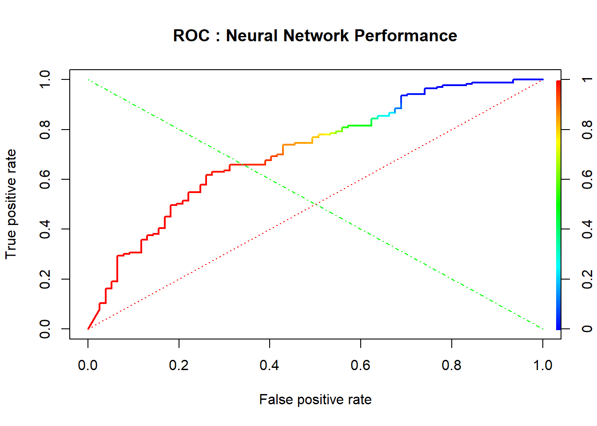
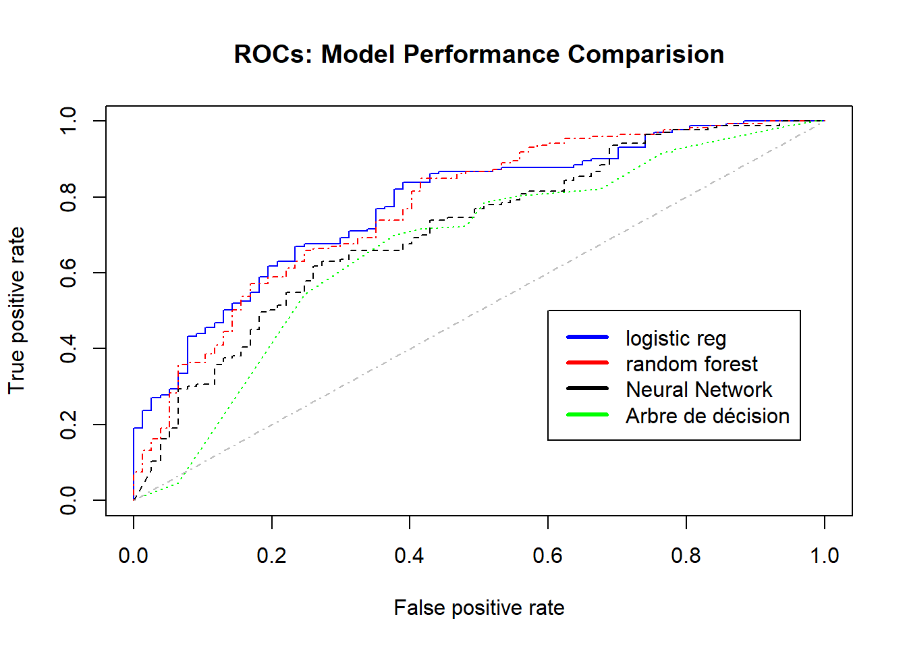

Le projet consiste à modéliser et predire la probabilité de solvabilité des clients d’une banque de la base de données GERMAN CREDIT en appliquant des algorithmes de classification supérvisé et de comparer les performances des modèles .
library(readxl)
library(ggplot2)
library(dplyr)##
## Attaching package: 'dplyr'## The following objects are masked from 'package:stats':
##
## filter, lag## The following objects are masked from 'package:base':
##
## intersect, setdiff, setequal, unionlibrary(plotly)## Warning: package 'plotly' was built under R version 3.4.4##
## Attaching package: 'plotly'## The following object is masked from 'package:ggplot2':
##
## last_plot## The following object is masked from 'package:stats':
##
## filter## The following object is masked from 'package:graphics':
##
## layoutlibrary(corrplot)## Warning: package 'corrplot' was built under R version 3.4.3## corrplot 0.84 loadedlibrary (Deducer)## Warning: package 'Deducer' was built under R version 3.4.3## Loading required package: JGR## Warning: package 'JGR' was built under R version 3.4.3## Loading required package: rJava## Loading required package: JavaGD## Warning: package 'JavaGD' was built under R version 3.4.3##
## Please type JGR() to launch console. Platform specific launchers (.exe and .app) can also be obtained at http://www.rforge.net/JGR/files/.## Loading required package: car## Warning: package 'car' was built under R version 3.4.3##
## Attaching package: 'car'## The following object is masked from 'package:dplyr':
##
## recode## Loading required package: MASS##
## Attaching package: 'MASS'## The following object is masked from 'package:plotly':
##
## select## The following object is masked from 'package:dplyr':
##
## select##
##
## Note Non-JGR console detected:
## Deducer is best used from within JGR (http://jgr.markushelbig.org/).
## To Bring up GUI dialogs, type deducer().library(ROCR)## Warning: package 'ROCR' was built under R version 3.4.3## Loading required package: gplots##
## Attaching package: 'gplots'## The following object is masked from 'package:stats':
##
## lowesslibrary(pROC)## Warning: package 'pROC' was built under R version 3.4.3## Type 'citation("pROC")' for a citation.##
## Attaching package: 'pROC'## The following objects are masked from 'package:stats':
##
## cov, smooth, varlibrary(rpart)## Warning: package 'rpart' was built under R version 3.4.4library(rpart.plot)## Warning: package 'rpart.plot' was built under R version 3.4.4library(randomForest)## Warning: package 'randomForest' was built under R version 3.4.4## randomForest 4.6-12## Type rfNews() to see new features/changes/bug fixes.##
## Attaching package: 'randomForest'## The following object is masked from 'package:dplyr':
##
## combine## The following object is masked from 'package:ggplot2':
##
## margindata2 <- read_excel("bbb.xls")
data2[which(data2$V21==2),21]=0
attach(data2)tr=sample(1000,750)
data2_train=data2[tr,]
data2_test=data2[-tr,]LogisticModel <- glm( V21~.,family = binomial(link = logit),data = data2_train)
summary(LogisticModel)##
## Call:
## glm(formula = V21 ~ ., family = binomial(link = logit), data = data2_train)
##
## Deviance Residuals:
## Min 1Q Median 3Q Max
## -2.5101 -0.7715 0.4194 0.7335 2.0386
##
## Coefficients:
## Estimate Std. Error z value Pr(>|z|)
## (Intercept) -3.565e+00 1.182e+00 -3.017 0.002554 **
## V01 6.278e-01 8.283e-02 7.579 3.49e-14 ***
## V02 -2.221e-02 1.005e-02 -2.211 0.027050 *
## V03 3.752e-01 1.001e-01 3.749 0.000178 ***
## V04 7.079e-03 3.451e-02 0.205 0.837479
## V05 -8.839e-05 4.576e-05 -1.932 0.053377 .
## V06 2.247e-01 6.694e-02 3.357 0.000787 ***
## V07 1.130e-01 8.366e-02 1.351 0.176736
## V08 -3.610e-01 9.687e-02 -3.727 0.000194 ***
## V09 2.687e-01 1.363e-01 1.971 0.048669 *
## V10 2.092e-01 2.027e-01 1.032 0.302113
## V11 -1.212e-02 8.936e-02 -0.136 0.892082
## V12 -3.238e-01 1.057e-01 -3.064 0.002184 **
## V13 6.936e-03 9.530e-03 0.728 0.466716
## V14 2.637e-01 1.285e-01 2.052 0.040177 *
## V15 3.588e-01 1.924e-01 1.865 0.062203 .
## V16 -3.818e-01 1.939e-01 -1.969 0.048950 *
## V17 6.098e-02 1.569e-01 0.389 0.697526
## V18 -6.322e-02 2.722e-01 -0.232 0.816354
## V19 3.882e-01 2.167e-01 1.792 0.073200 .
## V20 1.157e+00 6.845e-01 1.690 0.091028 .
## ---
## Signif. codes: 0 '***' 0.001 '**' 0.01 '*' 0.05 '.' 0.1 ' ' 1
##
## (Dispersion parameter for binomial family taken to be 1)
##
## Null deviance: 912.88 on 749 degrees of freedom
## Residual deviance: 706.69 on 729 degrees of freedom
## AIC: 748.69
##
## Number of Fisher Scoring iterations: 5fitLog <- predict(LogisticModel,type="response",data2_test)
predlogit = prediction( fitLog, data2_test$V21)
perflogit <- performance(predlogit, "tpr", "fpr")
#auc
AUCLog2=performance(predlogit, measure = "auc")@y.values[[1]]ArbreModel<- rpart(V21 ~ .,data = data2_train)
fitArbre <- predict(ArbreModel,newdata=data2_test)
predarbre = prediction(fitArbre, data2_test$V21)
perfarbre <- performance(predarbre, "tpr", "fpr")
AUCArbre=performance(predarbre, measure = "auc")@y.values[[1]]RF <- randomForest(V21~ .,
data = data2_train)## Warning in randomForest.default(m, y, ...): The response has five or fewer
## unique values. Are you sure you want to do regression?fitForet <- predict(RF,
newdata=data2_test)
predforet = prediction( fitForet, data2_test$V21)
perfrandomforest <- performance(predforet, "tpr", "fpr")
AUCRF=performance(predforet, measure = "auc")@y.values[[1]]library(nnet)
library(NeuralNetTools)## Warning: package 'NeuralNetTools' was built under R version 3.4.4library(e1071)## Warning: package 'e1071' was built under R version 3.4.4Neural<- nnet(V21~ .,data = data2_train,size=20,maxit=10000,decay=.001, linout=F, trace = F)
fitNeural <- predict(Neural,
newdata=data2_test)
prednn = prediction( fitNeural, data2_test$V21)
perfnn <- performance(prednn, "tpr", "fpr")
plot(perfnn, lwd=2, colorize=TRUE, main="ROC : Neural Network Performance")
lines(x=c(0, 1), y=c(0, 1), col="red", lwd=1, lty=3);
lines(x=c(1, 0), y=c(0, 1), col="green", lwd=1, lty=4)
AUCnn=performance(prednn, measure = "auc")@y.values[[1]]
cat("AUC: ",AUCnn,"\n")## AUC: 0.7132347plot(perflogit, col='blue', lty=1, main='ROCs: Model Performance Comparision') # logistic regression
plot(perfrandomforest, col='red',add=TRUE,lty=4);
plot(perfnn, col='black',add=TRUE,lty=8); # Neural Network
plot(perfarbre, col='green',add=TRUE,lty=9); # Arbre de décision
legend(0.6,0.5,
c('logistic reg',
'random forest', "Neural Network",
"Arbre de décision"),
col=c('blue','red', 'black','green'),
lwd=3);
lines(c(0,1),c(0,1),col = "gray", lty = 4 ) # random line
models <- c('Logistic regression', 'Random Forest', 'Arbre de decision',"Réseau de neurone")
models_AUC <- c(AUCLog2, AUCRF, AUCArbre,AUCnn)
model_performance <- as.data.frame(cbind(models, models_AUC))
colnames(model_performance) <- c("Model", "AUC")
model_performance## Model AUC
## 1 Logistic regression 0.780572029126943
## 2 Random Forest 0.773965918474589
## 3 Arbre de decision 0.670257488176563
## 4 Réseau de neurone 0.713234742136476Le modèle le plus adéquat est le modèle Régression logistique qui correspont à l’“AUC” la plus élevée et la courbe de ROC au dessus des autres ROCs.